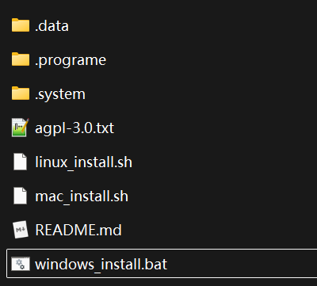
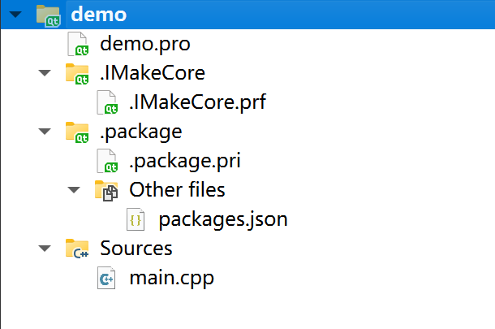
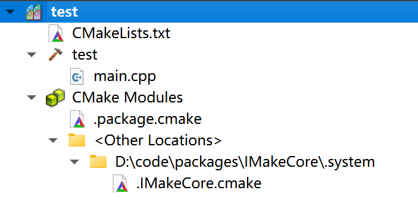
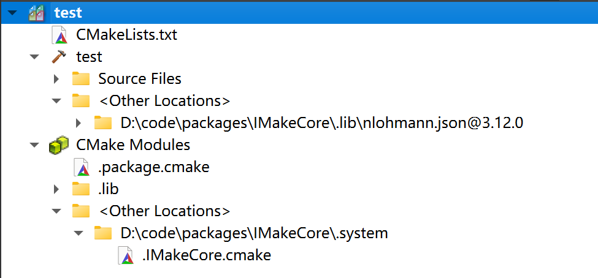
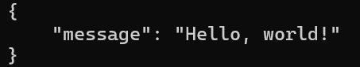

快速开始¶
本文档是 IMakeCore 项目的快速入门指南。
IMakeCore 是一款基于c++源代码，跨平台的，建立在cmake和 qmake 上的包管理系统。 用户可以使用该包管理系统轻松管理项目依赖的包。
安装 IMakeCore¶
安装环境¶
IMakeCore 需要 python3 的安装环境来该运行程序。请确保系统中 有 python 3 的安装环境。
另外需要确保 python3 中有 packaging 和 requests 两个库，否则 IMakeCore 在执行的时候会报错。
用户可以使用如下命令安装
下载 IMakeCore¶
IMakeCore 的下载地址是 https://iwebcore.github.io/assets/IMakeCore.zip 。用户可以点击下载或其他方式下载
解压缩 IMakeCore.zip¶
用户解压缩 IMakeCore.zip 文件，文件内容如下

安装 IMakeCore¶
在 IMakeCore 中有 linux_install.sh, windows_install.bat 和 mac_install.sh 三个脚本文件。
用户根据所在的操作系统执行相应的脚本即可。
注意在执行脚本的时候会要求获取管理员权限以设置环境变量和拷贝文件。
测试安装¶
用户在安装完成之后，打开命令行工具，输入以下命令：
在系统中会输出如下内容：
则IMakeCore 安装完成。
集成包管理系统¶
IMakeCore 不是项目管理系统，而是建立在 cmake 或者 qmake 基础之上的包管理系统，它只负责将代码包集成到项目中去。
接下来，我们以 qmake 项目为例进行讲解。
qmake 集成¶
创建 qmake 的项目¶
我们创建一个最简单的 qt 项目
此时项目的文件结构如下：
项目的内容如下：
集成 IMakeCore 到项目中去¶
集成 IMakeCore 到项目中去有两种方法
方法一：手动集成¶
第一种方法是在 .pro 文件中手动复制如下内容， 粘贴到 .pro 文件中：
方法二：使用 ipc 命令集成¶
第二种方法是在项目当前目录下面打开命令行工具，输入如下命令：
此时命令行中的内容显示如下：
此时我们的项目 IMakeCore 支持就完成了。
添加 IMakeCore 后的项目变化¶
我们在项目上执行 qmake 命令之后， 此时项目的文件结构如下：
QtCreator 中的项目管理截图如下：

项目的内容变化为以下的内容
此时我们在QMake项目中就集成好了 IMakeCore 包管理系统。
cmake 集成¶
cmake 集成 IMakeCore 与 qmake 集成 IMakeCore 基本相同，不同之处在于 cmake 项目的配置文件是 CMakeLists.txt 文件。
创建 cmake 的项目¶
我们创建一个最简单的 cmake 项目
此时项目的文件结构如下：
项目的内容如下：
集成 IMakeCore 到项目中去¶
集成 IMakeCore 到项目中去有两种方法
方法一：手动集成¶
第一种方法是在 CMakeLists.txt 文件中手动复制如下内容， 粘贴到 CMakeLists.txt 文件中：
方法二：使用 ipc 命令集成¶
第二种方法是在项目当前目录下面打开命令行工具，输入如下命令：
此时我们的项目 IMakeCore 支持就完成了。
添加 IMakeCore 后的项目变化¶
我们在项目上执行 cmake 命令之后， 此时项目的文件结构如下：
Qt vs Code 中的项目管理截图如下：

项目的内容变化为以下的内容
project(test LANGUAGES CXX)
set(CMAKE_CXX_STANDARD 11) set(CMAKE_CXX_STANDARD_REQUIRED ON)
add_executable(test main.cpp)
include($ENV{ICMakeCore}) ICMakeCoreInit(test) ```
此时我们在CMake项目中就集成好了 IMakeCore 包管理系统。
在上面的 cmake 或者 qmake 项目中，集成 IMakeCore 包管理之后，都会有一个 packages.json 文件，该文件用于管理项目中所使用的包。 用户如果想继续使用之前的方式操作 cmake 或者 qmake 项目，比如使用 vcpkg 安装包等，不会受到IMakeCore任何影响。
添加一个包到项目中¶
cmake 项目¶
添加一个包到项目中¶
下面我们添加一个包到项目中去，修改 packages.json 文件，添加一个包。
在上面的代码中，我们添加了一个 json库，名字为 nlohmann/json，版本号为 *，表示使用最新版本。
在项目上执行CMAKE, 或者执行QMAKE, IMakeCore 会自动下载该包，并将其集成到项目中。
项目变化¶
如下是 cmake 项目面板， 对比与之前的内容，多了一个 nlohmann.json@3.12.0 文件夹，这个就是我们所已经集成进来的包。

我们看到 nlohmann.json 版本已经被集成进来了。
此时项目的文件结构如下：
此时的文件系统变化如下：
测试¶
为了测试我们添加的包是否能正常使用，我们修改 main.cpp 文件，添加如下代码：
编译执行该项目，输出如下：

项目导入包成功
qmake 项目¶
qmake 项目中 IMakeCore 的使用方式和 cmake 项目完全一致。这里不再详细说明。
让我们继续¶
在 IMakeCore 安装完成之后，并对 IMakeCore 进行简单的包管理之后，用户可以继续一下的内容。